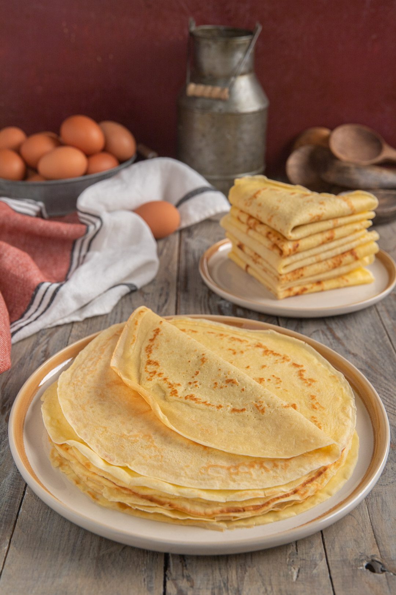

Crepes

Crepes, a french delight
Crepes are a delicacy from France. It's a thin batter that gets cooked to form very flexible, round discs. It can then be filled in a variety of ways, both savory and sweet. And they're super easy to do!
Ingredients
- flour
- eggs
- milk
- melted butter
- sugar, optional
- salt
Procedure
- In a bowl, combine the flour with the eggs and milk with a whisk, trying to avoid any lumps
- Once mixed, add a pinch of salt and a tablespoon of sugar, if using it.
- Add the melted butter as well. Note: you could substitute it for vegetable oil
- Let the batter rest for 30 minutes to 1 hour. This step is not strictly necessary, but very much suggested!
- Heat up a wide non-stick pan and lightly oil it
- Pour a ladleful of batter into the pan and quickly spread it in a thin layer by moving and rotating the pan itself.
- Cook the crepe until it releases on its own, then flip and cook on the other side
- Then remove crepe to a plate and repeat until you have used all the batter